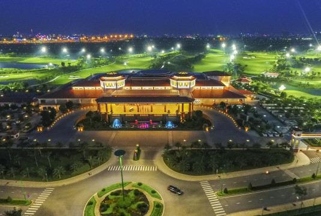
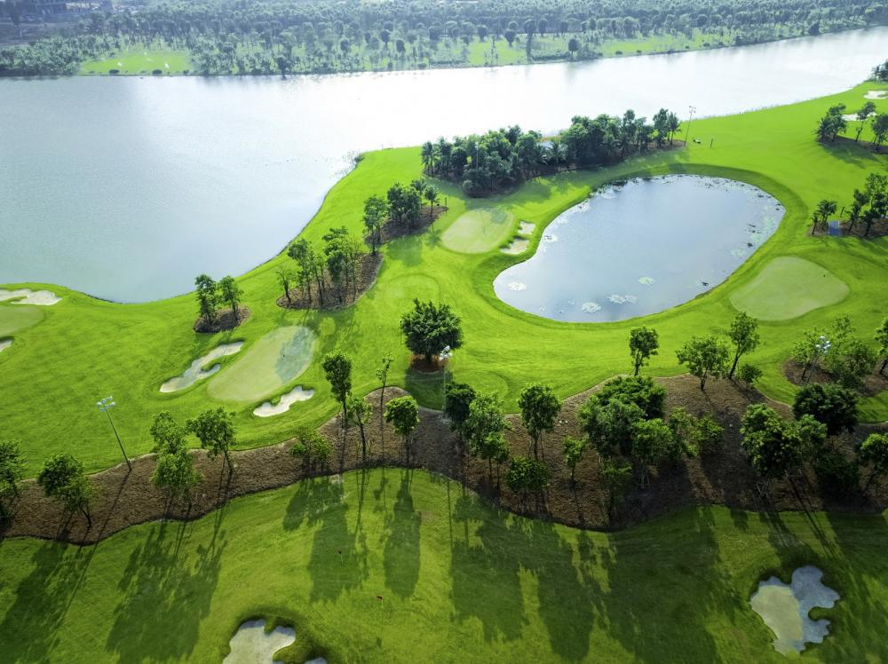
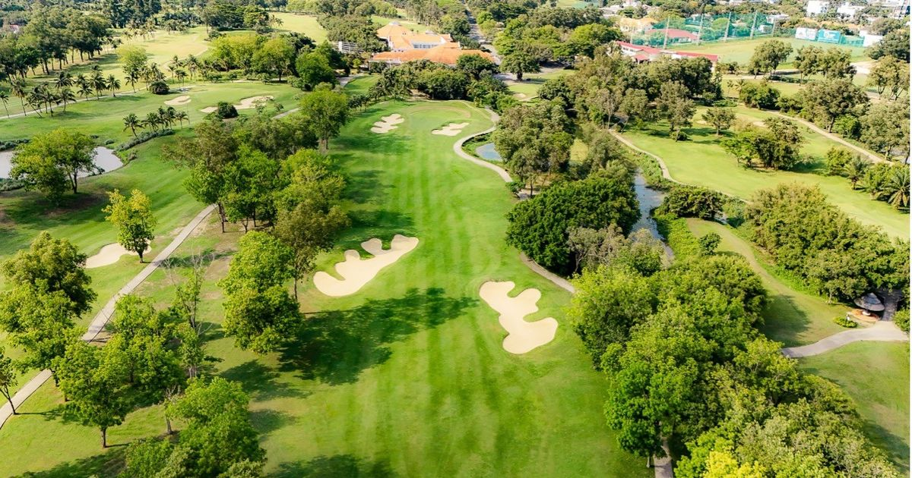
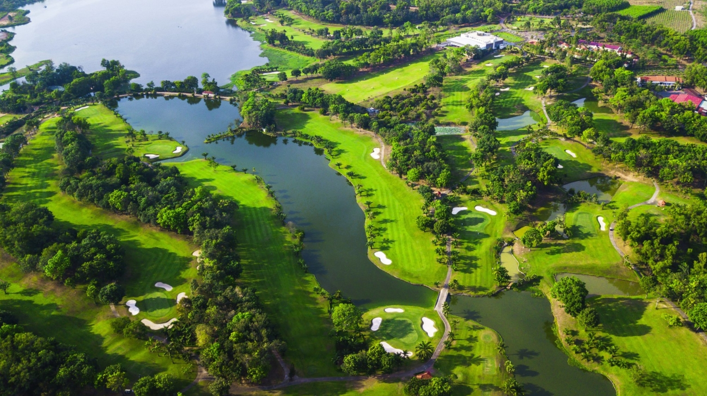
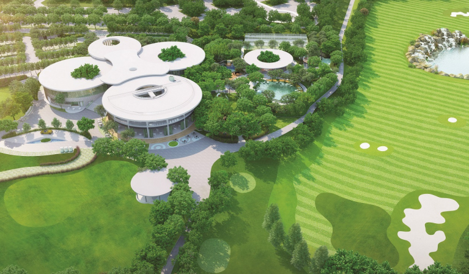
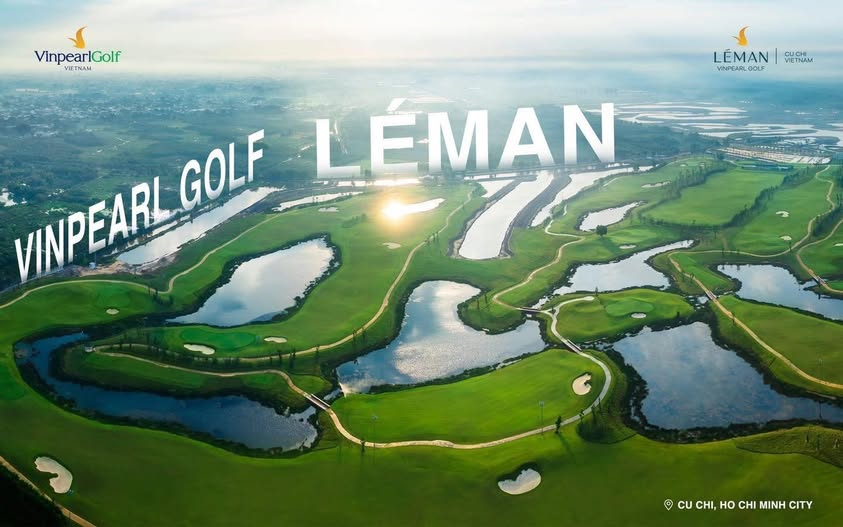

베트남 골프 여행 필수 코스! 각 골프장 특징·요금·예약 정보 총정리
베트남은 최근 한국 골퍼들에게 가장 사랑받는 골프 여행지로, 합리적인 그린피, 다양한 난이도의 코스, 따뜻한 날씨 덕분에 연중 내내 라운딩을 즐길 수 있는 최적의 환경을 제공합니다. 그중에서도 호치민과 동나이·빈즈엉 지역에는 수준 높은 골프장이 밀집해 있어 짧은 일정에서도 효율적인 골프 여행이 가능합니다.
아래는 베트남 남부에서 가장 인기 있는 9개 골프장의 핵심 특징·가격대·예약 포인트를 한눈에 정리한 가이드입니다. 각 코스를 비교하며 자신에게 가장 맞는 골프장을 선택해 보세요!
1) 탄손넛 골프 클럽 (Tân Sơn Nhất CC)
호치민 공항 바로 옆에 위치한 36홀 프리미엄 코스로 접근성이 압도적으로 좋습니다. 야간 라운딩도 가능하며 시설·서비스 모두 최고 수준입니다. 짧은 여행이나 출장 라운딩에 최적입니다.
- 장점: 공항 5~10분, 36홀 대형 코스, 야간 라운드 가능
- 권장 요금대: 2,000k ~ 3,200k VND
- 추천 대상: 출장객 / 빠른 라운드 / 고급 코스 선호 골퍼
2) 투득 골프 클럽 (Thủ Đức Golf Club)
호치민 시내에서 가장 가까운 골프장 중 하나로, East / West 총 36홀을 갖춘 안정적인 챔피언십 코스입니다. 조용하고 여유로운 분위기로 한국 골퍼들에게 꾸준히 인기 있습니다.
- 장점: 시내 30~40분, 자연친화적 36홀
- 권장 요금대: 1,600k ~ 2,800k VND
- 추천 대상: 편안한 분위기 / 균형 잡힌 코스 선호 골퍼
3) 태광 정산CC (Taekwang Jeongsan CC)
동나이 정산섬에 위치한 리조트형 골프장으로, 시원한 강바람과 섬 특유의 고요한 분위기를 느낄 수 있습니다. 자연과 함께 힐링 라운드를 하고 싶은 골퍼들에게 특히 사랑받습니다.

- 장점: 섬 골프장 특유의 뷰, 자연풍경 최고
- 권장 요금대: 1,500k ~ 2,700k VND
- 추천 대상: 힐링 라운드 / 여유로운 플레이
4) 롱탄 골프 클럽 (Long Thành)
호치민 근교 최고 수준의 36홀 프리미엄 골프장으로, Hill / Lake 각각 다른 난이도를 제공합니다. 전체적인 코스 퀄리티가 매우 높고 특히 한국인 만족도가 높은 골프장입니다.

- 장점: 베트남 남부 대표 상급 코스
- 권장 요금대: 1,800k ~ 3,000k VND
- 추천 대상: 난이도 있는 코스 선호 골퍼
5) 트윈도브CC (Twin Doves Golf Club)
빈즈엉 지역의 27홀 멤버십 코스로 고급스러운 시설과 코스 관리 상태가 매우 우수합니다. Luna·Stella·Sole 각 코스가 다른 플레이 경험을 제공합니다.

- 장점: 멤버십급 시설, 최상급 그린 관리
- 권장 요금대: 2,000k ~ 3,500k VND
- 추천 대상: 고급 코스 / 안정적인 플레이 원함
6) 송베 골프 리조트 (Sông Bé Golf Resort)
베트남 최초의 국제 규격 27홀 골프장으로, Palm·Lotus·Desert 코스 모두 개성 있고 난이도가 뚜렷합니다. 가성비 좋은 골프장을 찾는 분들에게 추천됩니다.
- 장점: 27홀 다양한 코스 / 가성비 우수
- 권장 요금대: 1,400k ~ 2,400k VND
- 추천 대상: 저렴한 비용 + 다양한 코스 원함
7) 동나이 골프 리조트 (Đồng Nai)
호수와 숲이 어우러진 자연형 27홀 골프장으로, 조용하고 평온한 플레이 환경이 특징입니다. 자연 속에서 힐링을 원하는 골퍼에게 매우 적합합니다.
- 장점: 자연 중심의 힐링 코스
- 권장 요금대: 1,200k ~ 2,200k VND
- 추천 대상: 조용한 라운드 / 초보~중급자
8) 하모니CC (Harmony CC)
빈즈엉 지역의 프리미엄 18홀 골프장으로, 빠른 그린 스피드와 정교한 코스 설계가 특징입니다. 중·상급 골퍼에게 특히 인기 있습니다.
- 장점: 높은 코스 난이도 & 고급 시설
- 권장 요금대: 2,000k ~ 3,000k VND
- 추천 대상: 기술적 플레이 선호 골퍼
9) 빈펄 레만 (Vinpearl Leman)
리조트와 결합된 자연형 18홀 골프장으로, 휴식과 라운딩을 동시에 즐길 수 있는 최적의 환경을 제공합니다.
- 장점: 리조트형 골프장, 편안한 분위기
- 권장 요금대: 1,800k ~ 2,800k VND
- 추천 대상: 휴양 + 골프 여행
위 9개 골프장은 모두 한국 골퍼들이 자주 찾는 인기 코스로, 각각의 특징이 뚜렷해 여행 목적에 따라 최적의 선택이 가능합니다. 티타임·요금·예약 문의는 카카오톡 채널을 통해 가장 빠르게 안내받을 수 있습니다.